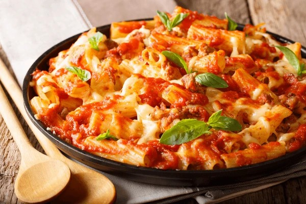
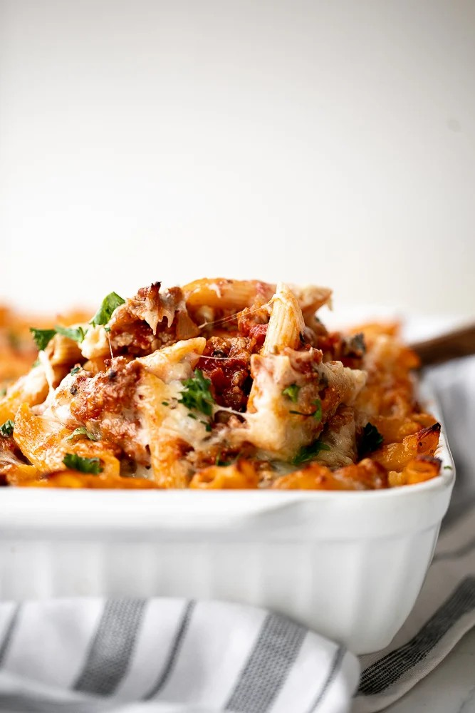

Pasta bake with sausage (baked ziti) is basically a lazy day lasagna with layers of pasta tossed in a rich tomato meat sauce packed with Italian sausage, layered with lots of gooey golden mozzarella cheese, and baked to perfection. It's an easy and delicious casserole dinner to make any day of the week. Plus, you can even make it ahead and freeze for another day.

Ingredients
Pasta -
I used penne, but you can use the more traditional ziti pasta. But really any kind of smaller pasta will work here such as elbow pasta, rotini, or farfalle.
Olive oil
Italian sausage -
you could use any kind of ground meat as well, such as ground beef, pork, turkey, or chicken. You may have to increase the amount of Italian seasoning used to compensate for the flavours in Italian sausage.
Onion
Garlic
Tomato sauce
Herbs -
I used Italian seasoning, fresh parsley and fresh basil.
Cheese -
Parmesan and mozzarella cheese.
Salt and Pepper

Cooking Instructions
Step 1: Boil the pasta -
Bring a large pot of salted water to a boil over medium-high heat. Add pasta and cook until al dente (fully cooked but still firm), about 8-10 minutes, or according to package directions. Drain well and set aside.
Step 2: Cook the sausage -
Meanwhile, heat olive oil in a large pot (or 4 qt. Dutch oven) for 2 minutes over medium-high heat until the hot oil sizzles. Add sausage and stir to cook until browned, about 5-7 minutes. Use a spatula to break the sausages into small pieces. Add onions and garlic and sauté until soft and tender, about 2-3 minutes. Stir to combine.
Step 3: Make the sauce -
Pour in tomato sauce, turn the heat down to medium, and bring the meat sauce to a simmer, stirring occasionally. Stir in Italian seasoning, ½ cup Parmesan cheese, parsley and basil. Season with salt and pepper. Turn the heat down to low and simmer for 5-7 minutes, stirring occasionally. Simmering helps develop richer flavour in the sauce.
Step 4: Add the pasta -
Transfer the cooked and drained pasta into the sauce and toss well to mix evenly.
Step 5: Assemble -
Spread half of the pasta into a 9x13 casserole pan and top with half of mozzarella cheese (1.5 cups). Add the remaining pasta and sprinkle the remaining mozzarella and Parmesan cheese evenly on top.
Step 6: Bake -
Bake the pasta in a 375F preheated oven for 25 minutes until the melted cheese is golden brown. Let cool for 15 minutes, then serve.